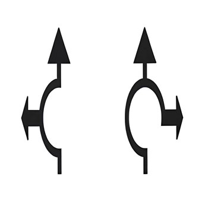

Loading...

Arrows depicting lane direction on roundabouts
🛣 Road Markings
📖 Description
Provides advance guidance on which lane to choose before entering a roundabout. Each lane corresponds to specific exits or destinations, helping drivers position themselves correctly early on.